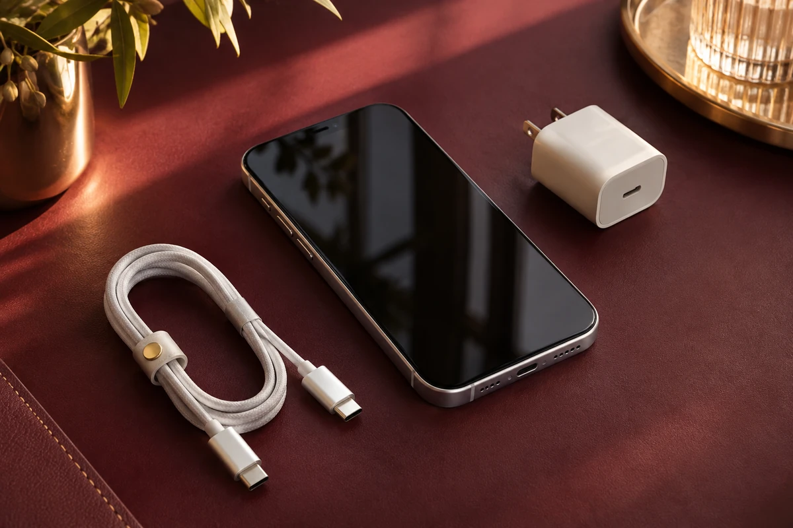
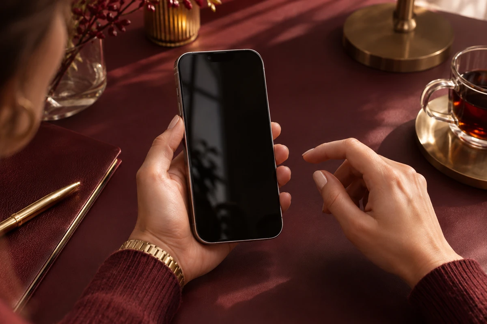

VAI TROCAR DE IPHONE?GUERRA
DESLIZE PARA COMEÇAR
Arraste para o lado →Seu iPhone novo começa aqui.
Quatro passos para preparar a troca com mais tranquilidade.

Dicas, tutoriais e respostas para escolher melhor, começar com calma e cuidar do que acompanha você todos os dias.
Encontre sua resposta

Busque um assunto ou explore as categorias. Toque no título para ler o guia.
16 guias para explorar
Escolha com mais segurança.
Comece pelo seu uso real: abra Ajustes → Geral → Armazenamento do iPhone. Veja o espaço ocupado e quais apps, fotos e vídeos mais pesam.
O espaço do iCloud é separado do armazenamento físico. Assinar mais nuvem não muda a capacidade interna do aparelho. Compare seu uso atual com as opções disponíveis antes de decidir.
Guia oficial da AppleAntes de escolher, defina três prioridades: tamanho confortável, fotos e vídeos, e o valor que pretende investir.
Dica do Guerra: conte para a equipe como você usa o aparelho. Uma boa escolha começa pela sua necessidade.
Guia oficial da AppleNovo: confirme a condição anunciada, a identificação da unidade e os itens incluídos. Seminovo: peça informações sobre uso, bateria, reparos e estado físico.
Em anúncios com a sigla CPO, solicite a descrição do processo de recondicionamento, quem o realizou e a documentação da unidade. A sigla, sozinha, não comprova certificação da Apple.
Esses termos não substituem a avaliação do produto. Tire as dúvidas com a equipe antes de fechar a compra.
Guia oficial da AppleSe a configuração pedir a Conta Apple do antigo dono, a unidade ainda precisa ser desvinculada por ele. Não avance com a compra nessa condição.
Considere o conjunto: um percentual de bateria não descreve sozinho a conservação do aparelho.
Guia oficial da AppleO eSIM permite ativar uma linha sem inserir um chip físico. As formas de ativação variam conforme o modelo, a região e a operadora.
Não presuma que todo iPhone tem bandeja de chip ou que toda linha aceita a mesma transferência. Combine essa etapa antes da compra.
Guia oficial da ApplePrepare seu novo começo.
A Apple oferece transferência pelo Início Rápido e restauração de backup do iCloud ou do computador.
Apps de banco, autenticadores e outros serviços podem pedir uma nova ativação. Só prepare o antigo para entrega depois dessa conferência.
Guia oficial da AppleSe faltar espaço no iCloud, gerencie o armazenamento ou avalie um plano adequado. Para o backup automático, observe as condições indicadas nos ajustes e no guia oficial.
Ter a opção ativada não confirma que a última cópia terminou. Confira a data antes de trocar ou apagar o aparelho.
Guia oficial da AppleA disponibilidade depende da compatibilidade do aparelho. Se precisar liberar espaço, revise as recomendações do sistema antes de excluir arquivos importantes.
Não instale perfis ou programas recebidos em mensagens para “liberar” uma atualização. Utilize os caminhos oficiais da Apple.
Guia oficial da AppleGuarde suas informações de acesso em um local seguro e mantenha os meios de recuperação atualizados. O Buscar deve ser configurado antes de uma eventual perda; não conte com a possibilidade de ativá-lo depois que o aparelho desaparecer.
Guia oficial da AppleAtenção: apagar fotos ou contatos manualmente enquanto estão sincronizados com o iCloud pode removê-los também dos outros dispositivos. Use o procedimento de preparação para venda ou troca, em vez de limpar os dados um por um.
Guia oficial da AppleSeu Apple bem cuidado, por mais tempo.
A bateria é um componente que envelhece com o tempo e o uso. O Carregamento Otimizado procura reduzir o período em que o iPhone permanece totalmente carregado.
Não existe uma rotina única que impeça o desgaste. Alertas de manutenção e mudanças no funcionamento merecem avaliação.
Guia oficial da ApplePara ver o espaço interno, abra Ajustes → Geral → Armazenamento do iPhone. Para o iCloud, abra Ajustes → seu nome → iCloud.
Mais espaço na nuvem não aumenta a capacidade física do iPhone. Se estiver usando sincronização, entenda o efeito de uma exclusão antes de apagar arquivos.
Guia oficial da AppleNão use abrasivos, solventes ou ar comprimido. Limpe também a capinha conforme as instruções do fabricante. Película e capinha ajudam na conservação, mas não tornam o aparelho imune a quedas ou danos.
Guia oficial da AppleDesconecte o cabo do iPhone e do adaptador. Deixe o dispositivo em um ambiente seco e ventilado, com o conector voltado para baixo ao remover suavemente o excesso de líquido.
Se o aviso continuar aparecendo com o conjunto seco, procure avaliação. Forçar a conexão pode danificar os contatos.
Guia oficial da AppleSe tiver informado credenciais em uma página suspeita, siga as orientações oficiais para proteger a conta e alterar a senha. Para falar com a loja, use os canais publicados neste site.
Guia oficial da AppleNão tente recuperar um aparelho roubado por conta própria. Antes de apagar remotamente ou remover dispositivos da conta, leia o procedimento oficial e considere as consequências para seus dados e para a proteção da unidade.
Guia oficial da AppleTente outra palavra ou veja todos os guias. A equipe também pode ajudar pelo WhatsApp.
Algumas respostas para facilitar sua próxima escolha.
Não. A capacidade física do aparelho e o armazenamento do iCloud são espaços diferentes. Entenda como conferir cada um.
Não envie senhas, códigos de desbloqueio nem códigos de verificação pelo WhatsApp. Descreva a dificuldade e o modelo do aparelho. Veja as dicas de segurança.
Peça à equipe as condições da unidade que deseja comprar e guarde a confirmação por escrito. Estado, acessórios e cobertura devem ser conferidos na oferta específica.
Os anúncios de iPhone da Guerra Store destacam capinha e película grátis. Confirme com a equipe os acessórios compatíveis com o modelo escolhido antes de concluir a compra.
Sim. Conte quais apps usa, quanto espaço ocupa hoje e o que espera melhorar. A equipe apresenta as opções e confirma preços e disponibilidade pelo WhatsApp.
Os nomes e os recursos podem variar conforme o modelo e a versão do sistema. Abra o guia oficial indicado no assunto ou fale com a equipe informando o modelo e a versão do iOS, sem compartilhar dados pessoais.
Conte seu modelo e a sua dúvida. Vamos ajudar você a encontrar o próximo passo.